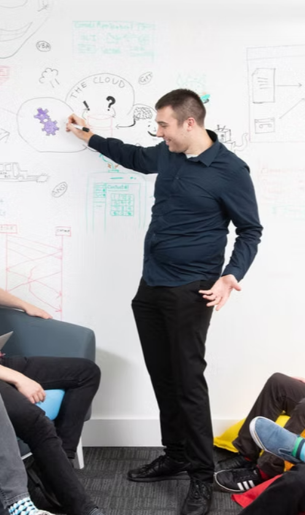

Always coding, always debugging, always wondering why it worked

Developed and enhanced the TeamsLink platform, delivering scalable telephony solutions integrated with Microsoft Teams. Built and maintained the TeamsLink Portal using HTML, CSS, Knockout.js, and TypeScript, and contributed to TeamsLink Pro using React to enable external voice calling within Teams. Implemented advanced telephony features including IVR, call queuing, routing, and CRM integratiaon. Worked with SQL databases and developed event-driven microservices in F#, with system monitoring via EventStore.
Helped to maintain and develop the VIA Portal, a centralised platform for managing unified communications systems. Built features for call routing, user provisioning, and real-time analytics across Skype for Business, Microsoft Teams, and Cloud PBX environments, improving visibility and operational efficiency.
Developed and customised business applications using VB.NET and SQL, delivering new features and modifying existing functionality based on customer requirements. Supported data migration and ensured system compatibility across client environments.